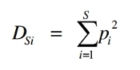
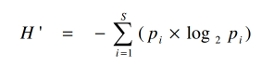

En algunos casos un valor dado de un índice de diversidad puede
provenir de distintas combinaciones de riqueza específica y equitabilidad. Es decir, que el
mismo índice de diversidad puede obtenerse de una comunidad con baja riqueza y alta
equitabilidad como de una comunidad con alta riqueza y baja equitabilidad. Esto significa
que el valor del índice aislado no permite conocer la importancia relativa de sus
componentes (riqueza y equitabilidad).
Algunos de los índices de diversidad más ampliamente utilizados son (1) el índice de
Simpson (DSi ), y (2) el índice de Shannon-Wiener (H’)
Índice de Simpson
Índice de Simpson (1949), DSi.

Este fue el primer índice de diversidad usado en
ecología. El índice de Simpson se deriva de la teoría de probabilidades, y mide la
probabilidad de encontrar dos individuos de la misma especie en dos ‘extracciones’
sucesivas al azar sin ‘reposición’. En principio esto constituye una propiedad opuesta a la
diversidad, se plantea entonces el problema de elegir una transformación apropiada para
obtener una cifra correlacionada positivamente con la diversida
Shannon-Wiener
Índice de Shannon-Wiener (Shannon y Weaver, 1949)

Este índice se basa en la teoría de la información (mide el contenido de
información por símbolo de un mensaje compuesto por S clases de símbolos discretos
cuyas probabilidades de ocurrencia son pi ...pS) y es probablemente el de empleo más
frecuente en ecología de comunidades.